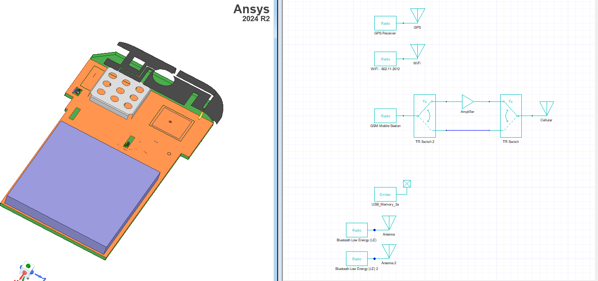

Download this example
Download this example as a Jupyter Notebook or as a Python script.
HFSS to EMIT coupling#
This example shows how to link an HFSS design to EMIT and model RF interference among various components.

Note: This example uses the
Cell Phone RFI Desenseproject that is available with the AEDT installation in the\Examples\EMIT\directory.
Keywords: EMIT, Coupling.
Perform imports and define constants#
Perform required imports.
[ ]:
import os
import shutil
import tempfile
import time
import ansys.aedt.core
from ansys.aedt.core.emit_core.emit_constants import ResultType, TxRxMode
from ansys.aedt.core.emit_core.nodes.generated import AntennaNode, RadioNode
Define constants.
[ ]:
AEDT_VERSION = "2025.2"
NG_MODE = False # Open AEDT UI when it is launched.
Create temporary directory#
Create a temporary directory where downloaded data or dumped data can be stored. If you’d like to retrieve the project data for subsequent use, the temporary folder name is given by temp_folder.name.
[ ]:
temp_folder = tempfile.TemporaryDirectory(suffix=".ansys")
Launch AEDT with EMIT#
Launch AEDT with EMIT. The Desktop class initializes AEDT and starts it on the specified version and in the specified graphical mode. A temporary working directory is created using tempfile.
[ ]:
d = ansys.aedt.core.launch_desktop(version=AEDT_VERSION, non_graphical=NG_MODE, new_desktop=True)
Copy example files#
Copy the Cell Phone RFT Defense example data from the installed Examples directory to the temporary working directory.
Note: The HFSS design from the installed example used to model the RF environment has been pre-solved. Hence, the results folder is copied and the RF interference between transceivers is calculated in EMIT using results from the linked HFSS design.
The following lambda functions help create file and directory names when copying data from the Examples directory.
[ ]:
file_name = lambda s: s + ".aedt"
results_name = lambda s: s + ".aedtresults"
pdf_name = lambda s: s + " Example.pdf"
Build the names of the source files for this example.
[ ]:
example = "Cell Phone RFI Desense"
example_dir = os.path.join(d.install_path, "Examples\\EMIT")
example_project = os.path.join(example_dir, file_name(example))
example_results_folder = os.path.join(example_dir, results_name(example))
example_pdf = os.path.join(example_dir, pdf_name(example))
Copy the files to the temporary working directory.
[ ]:
project_name = shutil.copyfile(example_project, os.path.join(temp_folder.name, file_name(example)))
results_folder = shutil.copytree(example_results_folder, os.path.join(temp_folder.name, results_name(example)))
project_pdf = shutil.copyfile(example_pdf, os.path.join(temp_folder.name, pdf_name(example)))
Open the project in the working directory.
[ ]:
aedtapp = ansys.aedt.core.Emit(project_name, version=AEDT_VERSION)
Create and connect EMIT components#
Create two radios with antennas connected to each one.
[ ]:
rad1, ant1 = aedtapp.schematic.create_radio_antenna("Bluetooth Low Energy (LE)")
rad2, ant2 = aedtapp.schematic.create_radio_antenna("Bluetooth Low Energy (LE)")
#rad1, ant1 = aedtapp.modeler.components.create_radio_antenna("Bluetooth Low Energy (LE)")
#rad2, ant2 = aedtapp.modeler.components.create_radio_antenna("Bluetooth Low Energy (LE)")
Define coupling among RF systems#
Define coupling among the RF systems.
[ ]:
for link in aedtapp.couplings.linkable_design_names:
aedtapp.couplings.add_link(link)
print('linked "' + link + '".')
[ ]:
for link in aedtapp.couplings.coupling_names:
aedtapp.couplings.update_link(link)
print('linked "' + link + '".')
Calculate RF interference#
Run the EMIT simulation. This portion of the EMIT API is not yet implemented.
This part of the example requires Ansys AEDT 2023 R2.
[ ]:
if AEDT_VERSION > "2023.1":
rev = aedtapp.results.analyze()
rx_bands = rev.get_band_names(radio_name=rad1.name, tx_rx_mode=TxRxMode.RX)
tx_bands = rev.get_band_names(radio_name=rad2.name, tx_rx_mode=TxRxMode.TX)
domain = aedtapp.results.interaction_domain()
domain.set_receiver(rad1.name, rx_bands[0], -1)
domain.set_interferer(rad2.name, tx_bands[0])
interaction = rev.run(domain)
worst = interaction.get_worst_instance(ResultType.EMI)
if worst.has_valid_values():
emi = worst.get_value(ResultType.EMI)
print("Worst case interference is: {} dB".format(emi))
Release AEDT#
Release AEDT and close the example.
[ ]:
aedtapp.save_project()
aedtapp.release_desktop()
# Wait 3 seconds to allow AEDT to shut down before cleaning the temporary directory.
time.sleep(3)
Clean up#
All project files are saved in the folder temp_folder.name. If you’ve run this example as a Jupyter notebook, you can retrieve those project files. The following cell removes all temporary files, including the project folder.
[ ]:
temp_folder.cleanup()
Download this example
Download this example as a Jupyter Notebook or as a Python script.